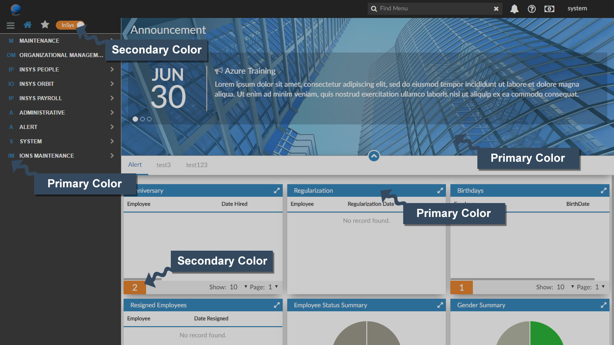
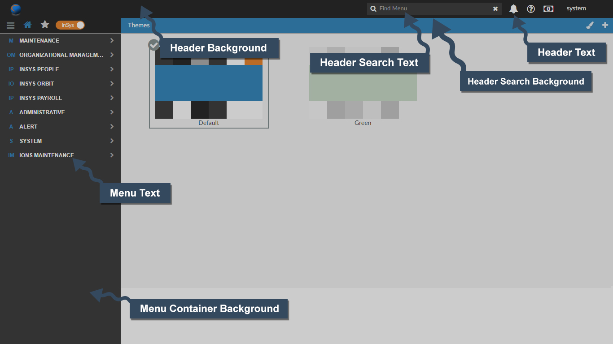
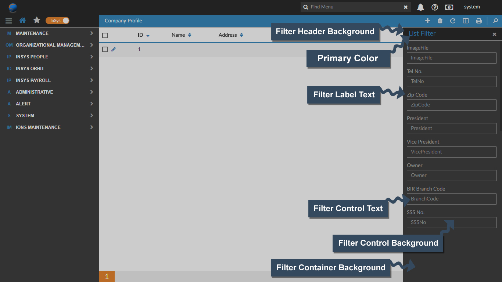

<div class="print-dialog themes-dialog themes-help">
    <div class="panel panel-primary">
        <div class="panel-heading" style="padding: 0px 15px;">
            <div class="row">
                <div class="col-md-7">
                    <p style="padding-top: 7px;">Theme Color Guide</p>
                </div>
                <div class="col-md-5" style="padding:0px;">
                    <div class="btn-group btn-group-xs pull-right" role="group" aria-label="...">
                        <button type="button" class="btn btn-default shine" title="Close" ng-click="Cancel()" style="height: 34px;border-radius: 0px;"><i class="fa fa-close"></i></button>
                    </div>
                </div>
            </div>
        </div>
        <div class="panel-body">
            <div class="container-fluid" style="padding: 0px;">
                <div id="myCarousel" class="carousel slide" data-ride="carousel">
                    <!-- Indicators -->
                    <ol class="carousel-indicators">
                        <li data-target="#myCarousel" data-slide-to="0" class="active"></li>
                        <li data-target="#myCarousel" data-slide-to="1"></li>
                        <li data-target="#myCarousel" data-slide-to="2"></li>
                    </ol>

                    <!-- Wrapper for slides -->
                    <div class="carousel-inner">
                        <div class="item active">
                            
                        </div>

                        <div class="item">
                            
                        </div>

                        <div class="item">
                            
                        </div>
                    </div>

                    <!-- Left and right controls -->
                    <a class="left carousel-control" href="#myCarousel" data-slide="prev">
                        <span class="fa fa-chevron-left"></span>
                        <span class="sr-only">Previous</span>
                    </a>
                    <a class="right carousel-control" href="#myCarousel" data-slide="next">
                        <span class="fa fa-chevron-right"></span>
                        <span class="sr-only">Next</span>
                    </a>
                </div>
            </div>
        </div>
    </div>
</div>